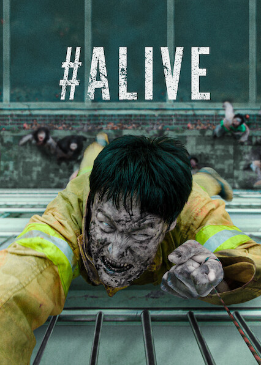

#Alive is a South Korean zombie horror film directed by Cho Il-hyung. The story centers around a video game live streamer who becomes trapped in his apartment during a sudden, chaotic zombie apocalypse in Seoul.

Image source: IMG
The movie follows Oh Joon-woo, a young gamer who is left home alone when a mysterious virus spreads rapidly through his city, turning people into cannibalistic monsters. As his food and water supplies run low and isolation takes a toll on his mental health, he discovers another survivor named Kim Yu-bin living across the courtyard. Together, they use modern technology and teamwork to find a way out of the locked-down complex.
The main cast features Yoo Ah-in as Oh Joon-woo, the tech-savvy gamer trying to survive online, and Park Shin-hye as Kim Yu-bin, a practical survivor who relies on traditional camping tools and traps to defend herself.
I highly recommend this movie because it offers a unique, modern spin on the typical zombie genre. By focusing heavily on the theme of digital isolation and social media communication during a crisis, it feels incredibly relatable and suspenseful from beginning to end.
You can find more information about the movie here: